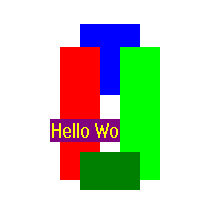
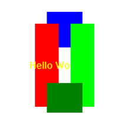
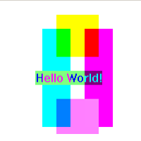
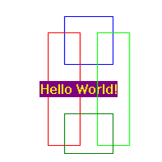
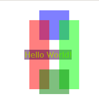
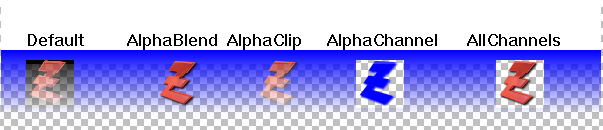
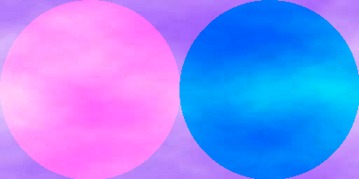

DrawingMode()
语法
DrawingMode(Mode)概要
Change the drawing mode for text and graphics output.
参数
模式 为进一步绘图操作行为。它可以是下列标志的组合：
</br0>
#PB_2DDrawing_Default当绘图开始时使用默认的绘图模式。与具有纯背景显示文本和填充图形形状的。如果当前输出具有 alpha 通道，绘图操作将只修改颜色分量并离开不变的 alpha 通道。#PB_2DDrawing_Transparent

如果设置了此标志DrawText()函数输出的背景将透明#PB_2DDrawing_XOr

启用 XOR 模式。All graphics will be XOR'ed with the current background. 这种模式不能结合下列 alpha 通道模式。#PB_2DDrawing_Outlined
注： 这种模式不能与PrinterOutput()同时工作。

If this flag is set then shapes will be drawn as outlines only and not filled. This applies to commands such as Circle, Box, etc.Note: The following modes only work with ImageOutput() and CanvasOutput(). They are ignored for all other outputs:

#PB_2DDrawing_AlphaBlendThe drawing operations will be alpha-blended onto the background. The RGBA() command can be used to specify colors with alpha transparency in commands like FrontColor(), Box(), DrawText() etc.#PB_2DDrawing_AlphaClip

The drawing operations will be alpha-blended onto the background like with the #PB_2DDrawing_AlphaBlend mode, with the addition that the alpha channel of the drawing output acts as a mask. This means that areas of the output that are transparent before the blending will also remain transparent afterwards. If the drawing output has no alpha channel then this mode acts just like the #PB_2DDrawing_AlphaBlend mode.#PB_2DDrawing_AlphaChannelThe drawing operations will only modify the alpha channel of the drawing output. All color information is ignored. For example drawing a circle with a color value of RGBA(0, 0, 0, 0) will "cut" a hole into the drawing output by making the circle area fully transparent. If the drawing output has no alpha channel then no drawing will have an effect in this mode.#PB_2DDrawing_AllChannelsThe drawing operations will modify the color channels and the alpha channel of the drawing output. The content of the channels is replaced by the drawing operation without any blending. Drawing in this mode has the same effect as drawing first using the #PB_2DDrawing_Default mode and then drawing the same operation using the #PB_2DDrawing_AlphaChannel mode. If the drawing output has no alpha channel then this mode is equivalent to the #PB_2DDrawing_Default mode.#PB_2DDrawing_Gradient

This mode allows drawing with a gradient instead of a solid color. The gradient shape can be defined with commands such as LinearGradient(), CircularGradient() etc. and the colors used in the gradient can be set with GradientColor(). The color parameters given to the individual drawing commands will be ignored in this mode. This mode can be combined with the above alpha channel modes to have gradients with semitransparent colors.#PB_2DDrawing_CustomFilter
In this mode, the drawing of the pixels can be defined by a custom procedure with the CustomFilterCallback() command. 这允许执行自定义绘制效果同时仍然使用默认功能做实际的绘图。

返回值
无.
备注
To use several modes at once, you have to use the '|' (OR) operator. The following is an example for XOR'ed outlined shapes:DrawingMode(#PB_2DDrawing_Outlined | #PB_2DDrawing_XOr)
参阅
FrontColor(), BackColor()
已支持操作系统
所有